For Anuda. Plain and simple. Every step here matches what the app does today.
The pictures use made-up names and numbers. Your screen will show your real bookings.
QUICK CARD (read this first)
What this app is. One place to see every booking enquiry for your artists. It shows what needs a reply, who owes money, and what is coming up. Kasuni and Nirbheeth work in it too. You see everything. They see only their own artists.
How to sign in.
- Open the FLOST8 site and go to the page called /manage.
- Tap Continue with Google.
- Pick your Google account.
If you see NO ACCESS YET, that Google account is not on the list. Use the account you gave your developer.
The 5 things you do every day.
- Open Overview. Look at the four tiles.
- Open Team follow-ups. See what each manager still has to do.
- Tap Done on follow-ups that are finished.
- Tap Nudge to remind a manager on WhatsApp.
- Check the Calendar and add any new event.
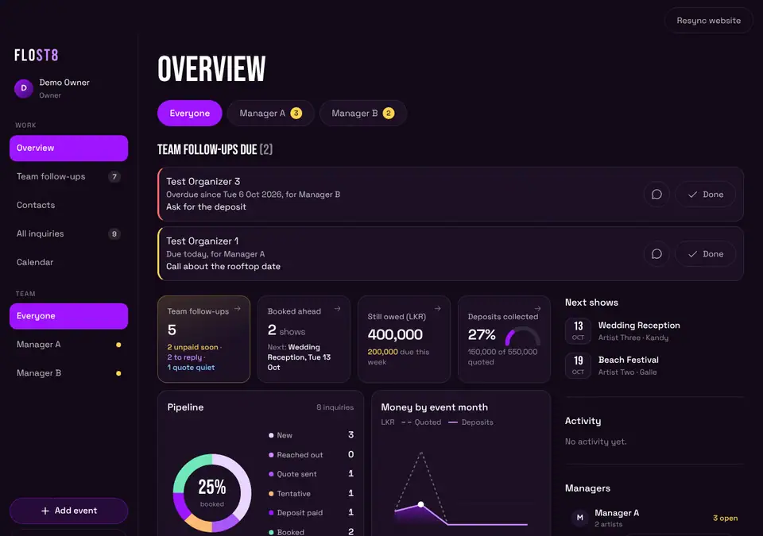
Three things to know.
- Most taps can be undone for 5 seconds. Look for the Undo button at the bottom.
- Rows marked From sheet cannot be changed here yet. Change them in the sheet.
- Only you and the manager who looks after an artist can see the money for that artist.
1. Sign in and move around
What it is for. Get in, and know where things are.
What to tap.
- Go to /manage. Tap Continue with Google.
- Choose your account.
What you will see. The Overview page.
- On a laptop the menu is on the left: Overview, Team follow-ups, Contacts, All inquiries, Calendar.
- On a phone the menu is the bar at the bottom: Overview, Follow-ups, Contacts, All, Calendar.
- Near the top are round buttons: Everyone, then one for each manager. Tap a manager to see only that manager's work. Tap Everyone to go back.
- Add event and Sign out are on the left (laptop) or at the top (phone).
- The app remembers the page you were on and your filters, on that device.
If it goes wrong.
- NO ACCESS YET: your email is not on the list. Ask your developer to add it.
- A grey Loading that never ends: check your internet and refresh the page.
2. Overview and its four tiles
What it is for. A quick look at the whole business.
What to tap. Open Overview. Tap any tile.
What you will see.
| Tile | What it shows | What happens when you tap it |
|---|---|---|
| Team follow-ups | How many events need a manager | Opens the Team follow-ups list |
| Booked ahead | Booked shows coming up, and the next one | Opens All inquiries showing upcoming booked shows |
| Still owed | Money still to collect | Opens All inquiries showing upcoming booked shows |
| Deposits collected | How much of the quoted money is paid as deposit | Opens All inquiries showing upcoming live inquiries |
Under the tiles you will also see:
- Follow-ups due: reminders that are due today or late, with the manager's name.
- Pipeline: how many inquiries are at each status.
- Money by event month: a small chart.
- Team follow-ups: the four most urgent items. Tap View all for the rest.
- On the right: Next shows, Activity, and Managers (this is where Nudge lives).
The number next to Team follow-ups in the menu can be a little higher than the tile. The menu also counts follow-up reminders that are due.
If it goes wrong. If a number looks too low, check you are on Everyone (not one manager).
3. Team follow-ups
What it is for. See what each manager has not done yet.
What to tap. Tap Team follow-ups in the menu (or the first tile).
What you will see. Cards, most urgent first. Each card shows the artist, date, city and the manager's name. It has one line that says what to do, for example:
- Reply to a new inquiry: the inquiry is New and has had no touch for more than 24 hours.
- Follow up on quote: the status is Quote sent and nothing has happened for more than 5 days.
- Chase money: the show is Booked or Deposit paid, it is within 14 days, and money is still owed.
Each card has one big button (like Reply on WhatsApp or Chased today) and a three dots button for more. The three dots menu can hold: Call, Chased today, Mark reached out, Mark paid, Set status, Snooze, Duplicate and Open details. You only see the ones that fit that card. Chased today, Mark reached out, Mark paid, Set status and Snooze can be undone for 5 seconds.
A card goes away when someone acts on it (a comment or a status change). A Tentative date never shows here. A date that is already past never shows here.
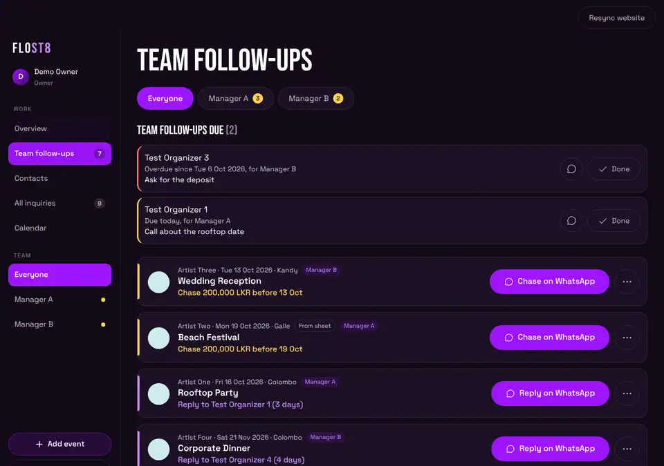
At the very top you may see TEAM FOLLOW-UPS DUE. These are reminders that managers set for themselves. Tap Done when one is finished.
If it goes wrong. An empty page that says NOTHING NEEDS YOU RIGHT NOW is good news.
4. All inquiries and filters
What it is for. Find any inquiry.
What to tap. Tap All inquiries.
What you will see. A list, split by year. Each row shows the date, name, artist, place, status, and money if you may see it. A bar at the top shows how many there are and the money totals.
Filters (all stay as you left them):
- My artists or Everyone's (you will want Everyone's).
- The search box: event, venue or organizer.
- The artist drop-down.
- All dates, Upcoming, Past.
- Status buttons: All, New, Reached out, Quote sent, Tentative, Deposit paid, Booked, Lost, Spam. You can pick more than one.
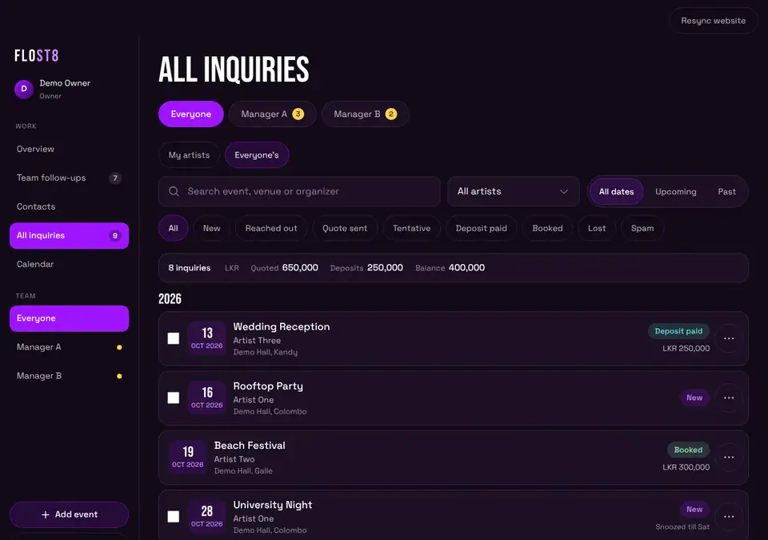
Tap a row to open it.
If it goes wrong. Nothing matches these filters means the filters are too tight. Tap Show everyone's inquiries.
5. Calendar
What it is for. See the month at a glance.
What to tap.
- Tap Calendar.
- Use the arrows to change month. Tap Today to come back.
- Tap a day.
What you will see. A month grid. Events are coloured by status. Tap a day. Under the grid you see what is on that day. Below that is a button: Add event on that date. Tap it and the Add event window opens with that date filled in.
On a laptop, a free day also shows a small + button when you point at it.
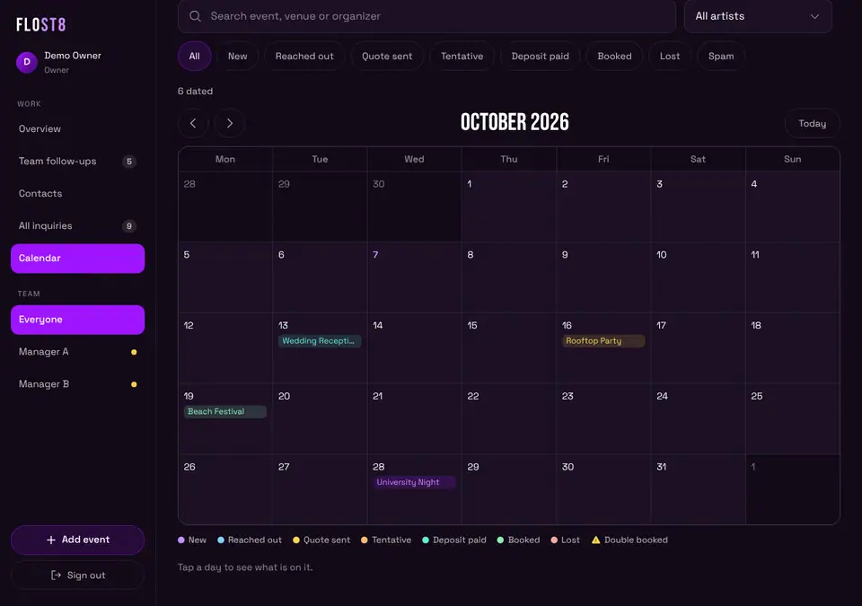
If it goes wrong. Calendar uses the same filters as the list. If an event is missing, check the filters.
6. Add and edit events
What it is for. Put a booking in the app.
What to tap.
- Tap Add event.
- Tap the artist (or artists).
- Pick the Date.
- Type an Event name or a Venue (you need at least one).
- Fix the Status if it is not right. It starts as Booked.
- Optional: Set time, City, Ticket link, Fee and Currency.
- In Organizer, start typing a name. Tap a match to fill in the phone, email and more. Or tap Add "name" as a new contact.
- Tap Add event.
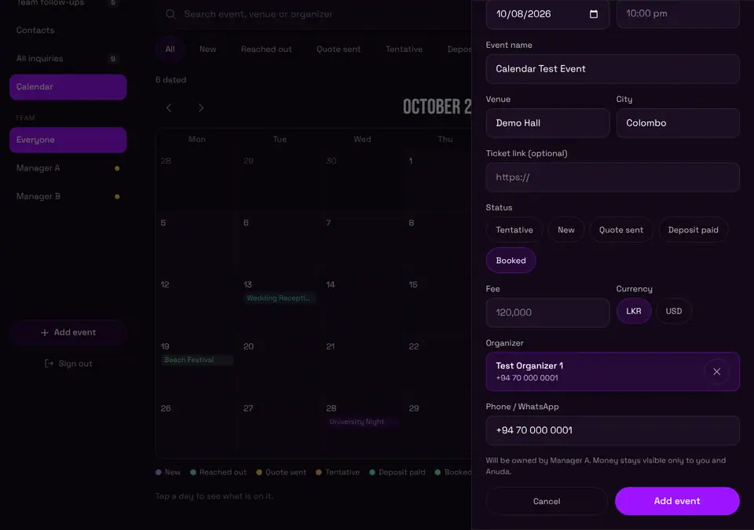
What you will see. Before you save, the window says who will own it (the manager of that artist). After you tap Add event, the event opens.
To edit. Open the event. Tap Edit event. This works for events added in the app. Sheet rows cannot be edited here. In the event you can also:
- Add Notes, Travel notes, a Contract link, and switch Contract signed.
- Add money details.
- Add a comment.
- Delete event (only for events added in the app, and it asks first).
If it goes wrong.
- Pick at least one artist. Tap an artist button.
- Pick the event date. Fill the date.
- Add an event name or a venue. Type one.
- You can view this but not change it. This is a sheet row, or it is not yours.
7. Change a status
What it is for. Move an inquiry forward (or close it).
Way one, from the list.
- Tap the three dots on the row.
- Tap Set status.
- Tap the new status.
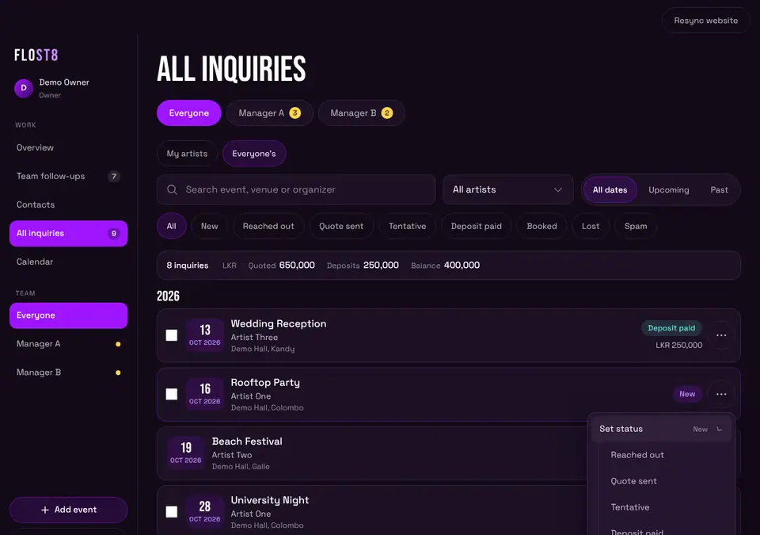
You get 5 seconds to tap Undo.
Way two, inside the event. Open the row. Tap a status button. A Tentative event also has a Confirm booking button.
If it goes wrong. There is no Set status on a From sheet row. That is on purpose (see section 17).
8. Snooze
What it is for. Hide a row from the follow-up lists until you want to see it again.
What to tap.
- Tap the three dots on the row.
- Tap Snooze.
- Tap Tomorrow, Friday, or Pick a date. (On a Thursday there is no Friday button, because tomorrow is Friday.)
What you will see. The row leaves the follow-ups. In All inquiries it says Snoozed till that day. On the day itself it comes back by itself. You get 5 seconds to Undo.
To bring it back early: three dots, then Unsnooze. This happens at once. There is no Undo for it.
As owner, you still see snoozed items on the Overview, under Team follow-ups, in a dim colour.
You can snooze sheet rows too.
If it goes wrong. If you get Something went wrong, ask your developer to finish the latest database update (see the list at the end).
9. Duplicate an event
What it is for. Make a new event that is like an old one.
What to tap.
- Tap the three dots on the row.
- Tap Duplicate.
- Pick the new Date.
- Tap Add event.
What you will see. The Add event window opens already filled in. It copies the artists, name, venue, city, set time, fee, currency, organizer and status. It does not copy the date or the ticket link. It does not copy deposits or balances. A copy of a Deposit paid event starts as Booked, because nobody has paid for the new date yet.
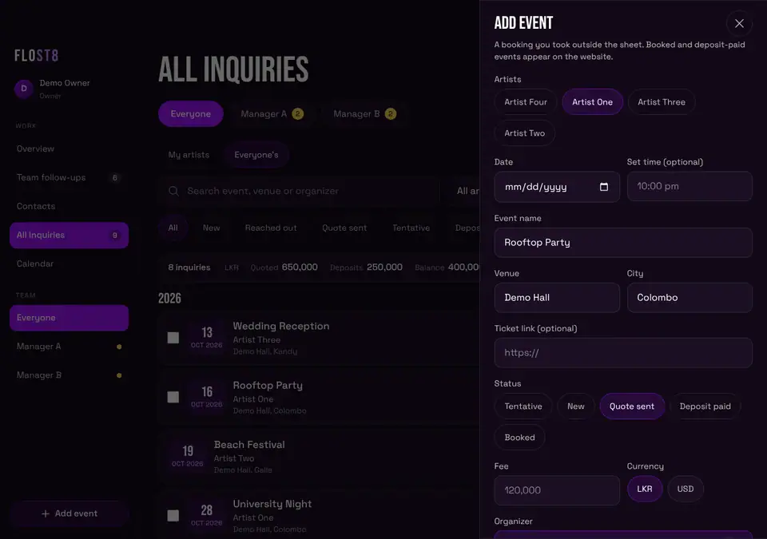
If it goes wrong. You must pick a date, or the app asks you to.
10. Bulk Lost or Spam
What it is for. Close many rows at once.
What to tap.
- Open All inquiries.
- Tick the small box at the left of each row.
- Tap Mark lost or Mark spam in the bar at the bottom.
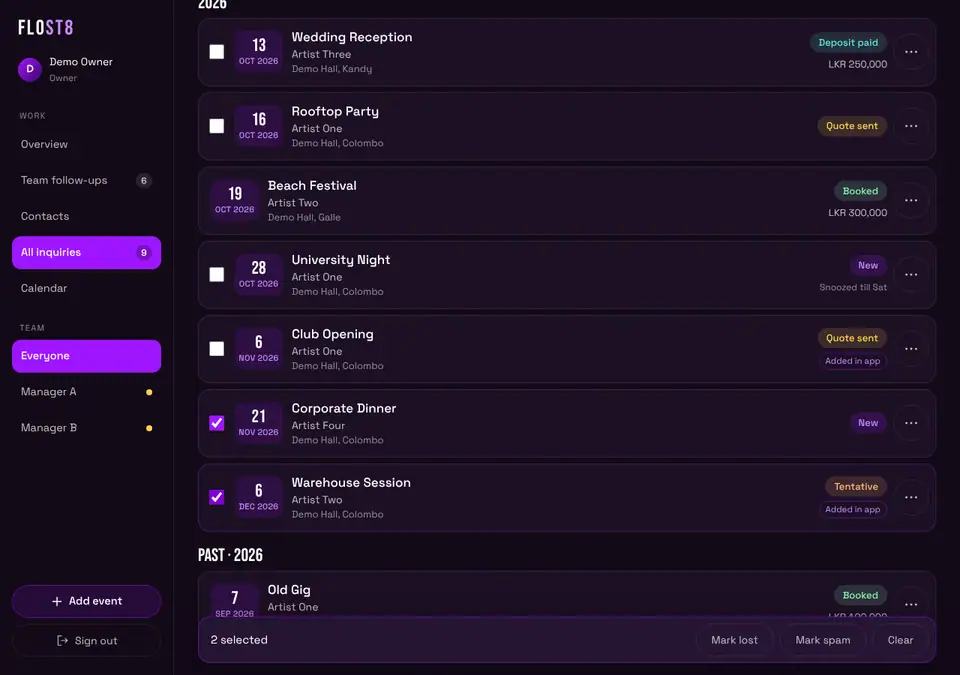
What you will see. The bar says how many you ticked. After you tap, you have 5 seconds to Undo. Then a message says what happened, for example 7 of 8 updated, 1 not allowed.
Tap Clear to untick everything.
If it goes wrong. Rows marked From sheet have no tick box. You cannot bulk change them.
11. Put events on the website (Upcoming Shows) and Resync
What it is for. Show your booked events to the public.
How it works.
- Events you add in the app with the status Booked or Deposit paid are sent to the website's Upcoming Shows list. This happens on its own when you save.
- Events from the sheets reach the website through the sheet's own sync, not through this button.
- You will sometimes see Already on the site from the sheet. That is fine.
- An event can be held back. It shows a note in the event: "held back from the website". Only you can tap Release to website.
Resync website. This button is at the top right (owner only). Tap it to check every app event against the website. It shows Updating website... while it works.
Good to know. The website step only works when your developer has switched it on. If it is off, saving still works, but the website list does not change. Resync will tell you: Website updates are switched off right now, so nothing was changed.
If it goes wrong.
- Saved, but the website list was not updated: tap Retry on the message.
- If it keeps failing, tell your developer.
12. Contacts
What it is for. Keep every organizer and venue person in one place.
What to tap. Tap Contacts.
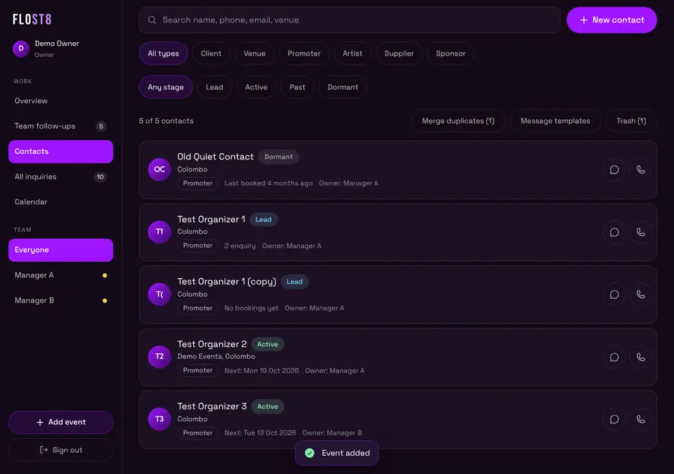
What you will see.
- A search box (name, phone, email, venue).
- Filters: All types, Client, Venue, Promoter, Artist, Supplier, Sponsor. And Any stage, Lead, Active, Past, Dormant.
- New contact button.
- Each row has a WhatsApp and a Call button.
- Rows show Owner: and the manager's name.
Add a contact. Tap New contact. Fill in the form. Save.
Open a contact card. Tap the name. The card has:
- WhatsApp, Call, Email, Edit buttons.
- FOLLOW-UPS (reminders), BOOKINGS, LOG A TOUCH, TIMELINE.
- Show change history.
- Merge with another contact and Move to Trash at the bottom.
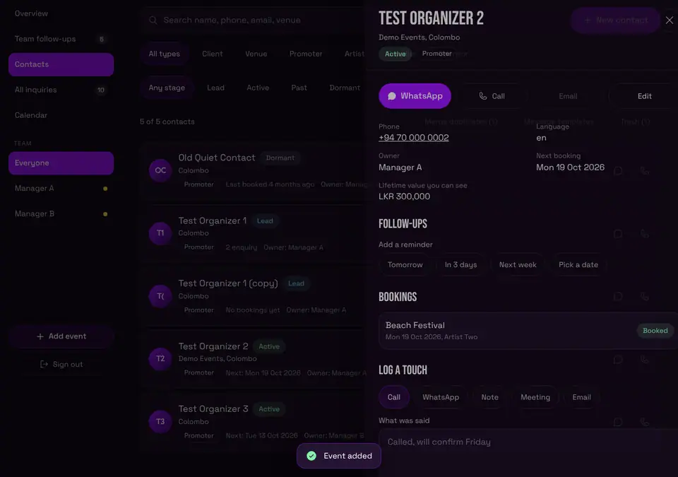
Merge duplicates. (Two entries for the same person.)
- In Contacts, tap Merge duplicates. The number in brackets is how many pairs the app found.
- Tap Review and merge on a pair. Or use Pick by hand: search, tick two or more, tap Review.
- Pick the one to keep (KEEP WHICH ONE?). You can change the name.
- Tap Merge.
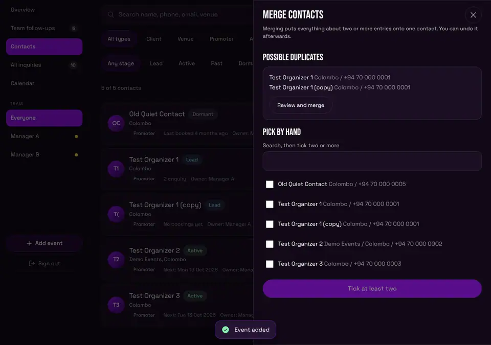
The kept contact gets all phone numbers, emails, notes and bookings. Nothing is erased. The other entries go to Trash.
Undo a merge. Right after merging, a bar appears for 20 seconds with Undo. After that: open the kept contact, tap Show change history, then tap Undo this merge.
Trash. Tap Move to Trash on a card. The contact, its bookings and its notes stay safe. Nothing is erased on its own. After 30 days your developer can clear old ones out for good, so restore a contact before then if you want it back. To get one back: Contacts, then Trash, then Restore.
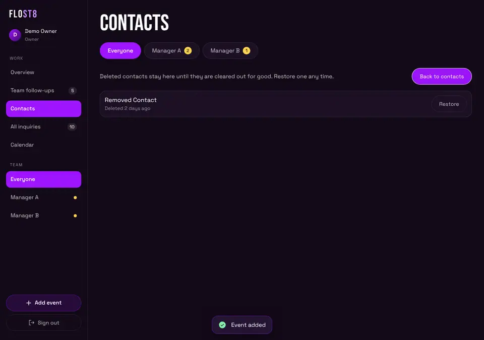
If it goes wrong. If you see Contacts could not be loaded, so the lists below may look empty., tap Try again.
13. Reminders
What it is for. Never forget to call someone back.
What to tap.
- Open a contact card.
- Under FOLLOW-UPS, pick Tomorrow, In 3 days, Next week or Pick a date.
- Type what to follow up on (optional).
- Tap Set reminder.
You can also set a reminder while you log a call: under LOG A TOUCH, pick Remind me.
What you will see. On the day it is due, it shows in Follow-ups due. Late ones are red. Tap Done when finished. The small chat button opens WhatsApp.
Good to know. You see your own reminders and your managers' reminders. Each one shows the manager's name.
14. WhatsApp templates
What it is for. Send a ready-made message in a few taps.
What to tap.
- Tap the WhatsApp button on a contact or on a follow-up card.
- Pick a language if there is more than one.
- Tap a template. The message fills in.
- Change the words if you like.
- Tap Open WhatsApp. WhatsApp opens with the message typed. You press send there.
The app can also Copy the message. If the box Add to their timeline when I open WhatsApp is ticked, it adds a note on the contact.
Make or change templates. In Contacts, tap Message templates (or Edit templates in the WhatsApp window). Tap New template. Give it a title, a language, and a message. You can type {name}, {date}, {venue}, {event} and {me}. They fill in by themselves. Archive hides a template. Restore brings it back. Everyone shares the same templates.
If it goes wrong. If it says There is no usable phone number yet, add a phone number to the contact.
15. Nudge a manager on WhatsApp
What it is for. Remind Kasuni or Nirbheeth about what is waiting, in one tap.
First, once per manager. The Nudge button needs the manager's WhatsApp number. You add it once.
- Open Overview.
- Find Managers on the right (on a phone it is lower on the page).
- Under a manager, tap Add WhatsApp number.
- Type the number. Use digits, with an optional + at the start. Spaces and dashes are fine. A number that starts with 0 is read as a Sri Lankan number.
- Tap Save number.
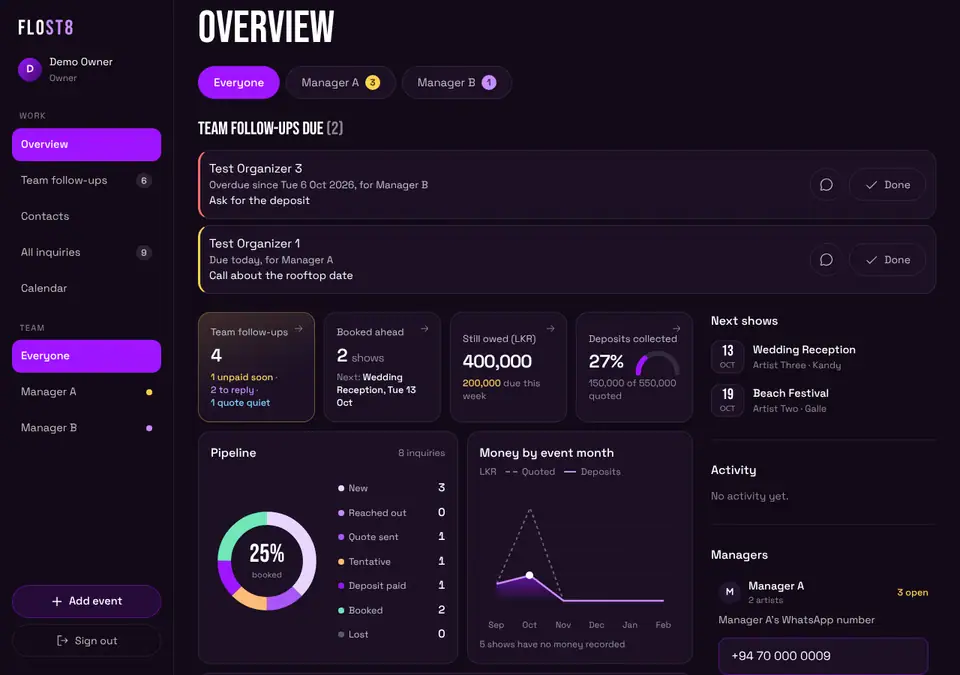
Then, every time.
- Tap Nudge under the manager's name.
- WhatsApp opens in a new tab with the message already written. For example: "Hi Kasuni, 2 things need you: ... Can you pick these up today?"
- Press send in WhatsApp. The app never sends anything by itself.
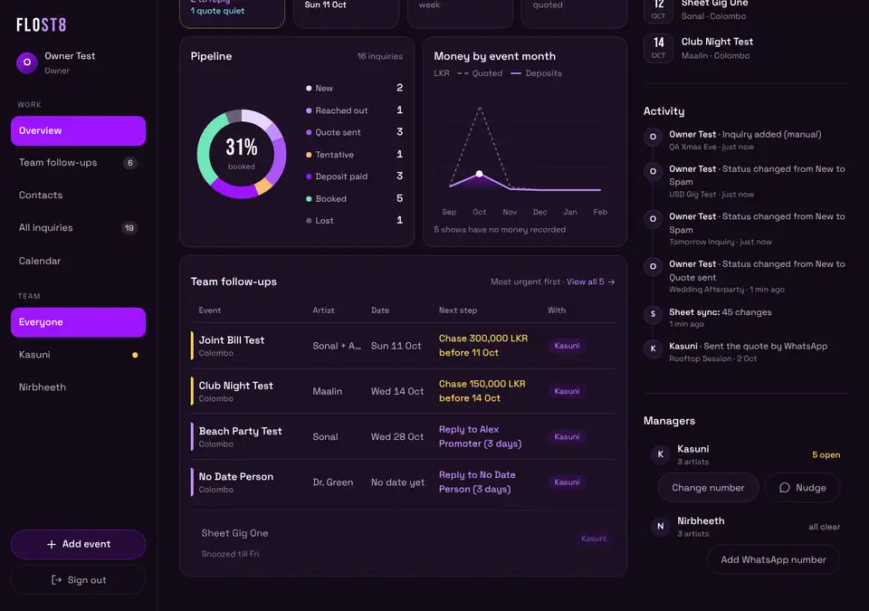
The message lists the next steps. It leaves out phone numbers and emails on purpose.
Wrong number? Tap Change number next to Nudge. Fix the number and tap Save number. Or tap Remove number to delete it.
If it goes wrong.
- The button says Nothing to nudge and is grey: that manager has nothing open.
- Enter the number with digits only...: fix the number.
- Saving numbers is not switched on yet.: your developer must finish the latest database update first.
- Only the owner can save a number.: you must be signed in as the owner.
Only you can read these numbers. The managers cannot.
16. Who can see money
- You see money on every event.
- A manager sees money only on the events of the artists they look after.
- Everyone else sees Money details are private to the artist's manager.
- Totals on the Overview and the All inquiries bar only add up what the person looking is allowed to see.
17. Sheet rows (and why you cannot edit them yet)
What it is. Kasuni and Nirbheeth keep Google Sheets. Every 15 minutes the app copies each sheet row in. The row shows a From sheet tag.
What you can do with a sheet row.
- Open it and read it.
- Call or WhatsApp the organizer.
- Add a comment.
- Link it to a contact.
- Snooze it.
- Tap Edit in sheet to open the sheet.
What you cannot do. Change the status, edit it, delete it, or bulk change it.
Why. The next copy from the sheet would overwrite your change within 15 minutes. So the app does not allow it. This will change in a later step, once your developer switches the copy off.
18. Keyboard shortcuts (laptop)
| Key | What it does |
|---|---|
| / | Jumps to the search box (on All inquiries and Calendar) |
| N | Opens Add event |
| Up and Down arrows | Move from row to row |
| Enter | Opens the row you are on |
| Esc | Closes a window or a menu |
They do not work while you are typing in a box, or while a menu or window is open. If an arrow key does nothing, click on an empty part of the page first.
19. Things only you can do (once)
- Ask your developer to apply the two latest database updates after reading them: number 12 (snooze and WhatsApp numbers) and number 13 (a privacy fix: contact counts no longer show one manager the other manager's shows). Until 12 is applied, Snooze and saved numbers will not work.
- Add each manager's WhatsApp number (section 15). Do this once.
- Ask your developer to switch on website updates if you want events to go to Upcoming Shows from the app.
- A later step, not now: switching off the sheet copy and moving the sheet rows into the app. When that is done, sheet rows become editable. Do not try to do this inside the app.
Troubleshooting
- NO ACCESS YET. That Google account is not on the list. Ask your developer to add it.
- You can view this but not change it. It is a sheet row, or it belongs to someone else.
- Could not reach the server. Check your internet and try again. Check your internet. Try again.
- Something went wrong. Please try again. Try again. If it keeps happening, tell your developer.
- A row is missing. Check the filters. Check Everyone's. It may be snoozed, or marked Lost or Spam.
- Saved, but the website list was not updated. Tap Retry.
- No Nudge button. Add the manager's WhatsApp number first.
- No WhatsApp button on a contact. The contact has no usable phone number.
- I tapped by mistake. Tap Undo within 5 seconds.
Glossary
- Needs you / Team follow-ups. The list of things waiting for a reply or for money. A manager sees Needs you. You see Team follow-ups.
- Sheet row. An inquiry copied in from a manager's Google Sheet. It has a From sheet tag.
- Snooze. Hide a row from the follow-up lists until a day you pick.
- Hold back. Keep an event off the website. Only the owner can release it.
- Trash. Where deleted contacts wait. You can restore them. They can be cleared out for good after 30 days.
- Merge. Join two entries for the same person into one contact.
- Nudge. A WhatsApp message to a manager about what is waiting.
- Booked ahead. Booked shows that have not happened yet.
- Still owed. Money not yet collected for upcoming shows.